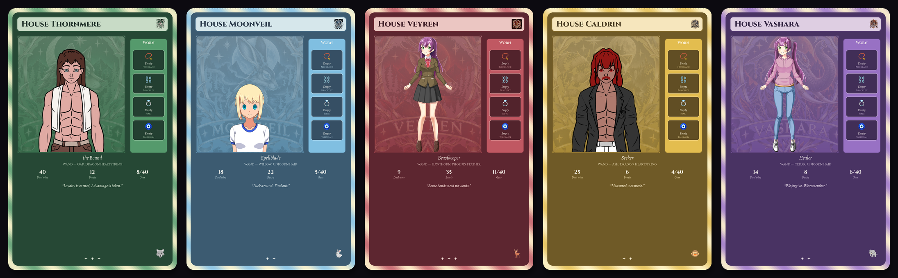

Velmora · the Mirror
Wizard Cards & Gear
Design your wizard, collect forty pieces of gear, and build a card worth showing off.
Your wizard card
/wizard opens a private designer with a live preview. Pick from the menus and it saves as you go. /mirror posts your card for everyone (or /mirror @someone to see theirs), and it's also the picture on your /profile.
Your card shows your wizard in your house's colours, everything you're wearing, your wand, your chosen title, your duel wins, beasts befriended, gear collected and your house's motto.
Stars
Cards get rarer as you earn gear: ★ to start, ★★ with 1–2 earned pieces, ★★★ with 3–6, ★★★★ with 7 or more.
Titles
/title picks which earned title shows on your card, or Automatic shows your best. Titles come from duel ranks and signature spells, beast ranks and Keeper titles, Champion of the Circle, House Cup Champion and Tri-Wizard Champion.

Look options
/wizard menus change with your presentation. Pick one of the three builds, then skin, hair, outfit, face, and extras from that pack.
| Choice | Options |
|---|---|
| Presentation | Masculine · Feminine · Feminine (full body) |
| Masculine | MALE1 pack — muscular half-figure, shirts/jackets/coats, short hair cuts, optional beard/glasses |
| Feminine | Bust portrait pack — hair, outfits, brows, expressions, glasses |
| Feminine (full body) | Full-figure portrait (always clothed) — uniforms, hoodie sets, and Girl Sprites Premium hair |
Gear
There are 40 pieces over four slots: necklace, bracelet, ring and talisman. You wear one per slot. Crafted pieces are made with /craft from satchel materials, and each place has its own. Earned pieces can't be crafted. They're handed out automatically (and announced) when you reach the achievement, and they come with a perk that works while you wear them. No gear ever touches duels or house points.
/jewelboxWhat you own, what you're wearing, and what you can craft right now./craftMake a piece. Ready-to-make pieces are listed first./wear//removeSwap pieces in and out./cheer/whistle/secrets/nightwatchPowers from earned gear.
📿 Necklaces
| Piece | Rarity | How to get it | What it does |
|---|---|---|---|
| Pressed-Violet Locket | Common | Craft: Pressed Violet + Overdue Slip | Looks only |
| Star-Chart Locket | Common | Craft: 2× Star Chart Fragment + Orrery Gear | Looks only |
| Dead-Coin Pendant | Uncommon | Craft: Dead Currency Coin + Manacle Link | Looks only |
| Fang Cord | Uncommon | Craft: Shed Fang + Raven Feather | Looks only |
| Meteorite Pendant | Uncommon | Craft: Meteorite Sliver + Orrery Gear | Looks only |
| Moonbloom Locket | Uncommon | Craft: Moonbloom Petal + Moonstone Chip + Sprite Thread | Looks only |
| Snail-Pearl Drop | Uncommon | Craft: Snail Pearl + Sprite Thread | Looks only |
| Magpie's Eye Necklace | Rare | Earn: Befriend all five Nifflers. | Sometimes you find two of something instead of one. |
| Nightwatch Pendant | Rare | Earn: Befriend 3 different night-only beasts. | A quiet heads-up (a DM) when a night beast appears. Turn it off with /nightwatch. |
| Legend's Tooth Necklace | Legendary | Earn: Befriend a legendary beast. | A golden aura on your card, and a legendary flourish on /summon. |
⛓️ Bracelets
| Piece | Rarity | How to get it | What it does |
|---|---|---|---|
| Blackened Acorn Beads | Common | Craft: Blackened Acorn + Standing Stone Chip | Looks only |
| Dewmint Vine Bracelet | Common | Craft: Dewmint + Silverleaf + Wandering Seed | Looks only |
| Manacle Bangle | Common | Craft: Manacle Link + Cellar Moss | Looks only |
| Orrery-Gear Bracelet | Common | Craft: Orrery Gear + Broken Compass | Looks only |
| Scribe's Thread | Common | Craft: Overdue Slip + Marginalia Scrap | Looks only |
| Inkmoth Cuff | Uncommon | Craft: Inkmoth Wing + Dust of Forgotten Words | Looks only |
| Kindred Bracelet | Rare | Earn: Raise your familiar to Devoted. | Your familiar's friendship grows faster. |
| Lingering Charm | Rare | Earn: Befriend 20 different beasts. | After a beast leaves, you still have 2 minutes to /approach it. |
| Champion's Band | Legendary | Earn: Be crowned Duelist of the Week. | For show only. |
| House Cup Bracelet | Legendary | Earn: Help your house win the House Cup. | Gold trim on your card's foil edge, and /cheer for a house celebration. |
💍 Rings
| Piece | Rarity | How to get it | What it does |
|---|---|---|---|
| Cellar-Moss Band | Common | Craft: Cellar Moss + Rusted Key | Looks only |
| Rusted Key Ring | Common | Craft: Rusted Key + Manacle Link | Looks only |
| Standing-Stone Ring | Common | Craft: Standing Stone Chip + Raven Feather | Looks only |
| Sunbell Ring | Common | Craft: Sunbell + Cracked Crystal | Looks only |
| Inkwell Signet | Uncommon | Craft: Self-Inking Nib + Marginalia Scrap | Looks only |
| Moonglass Ring | Uncommon | Craft: Moonglass Lens + Star Chart Fragment | Looks only |
| Familiar's Bell Ring | Rare | Earn: Raise your familiar to Inseparable. | Your familiar does extra things when you feed, pet or play with it. |
| Seeker's Ring | Rare | Earn: Find 10 secrets anywhere in Velmora. | A better chance of finding something when you /explore. |
| Tracker's Band | Rare | Earn: Befriend 10 different beasts. | Your /bestiary shows roughly when the next beast will appear. |
| Duelist's Signet | Legendary | Earn: Reach Master of the Circle in duels. | For show only: brighter wand sparks on your card. |
🧿 Talismans
| Piece | Rarity | How to get it | What it does |
|---|---|---|---|
| Bookmark Tassel | Common | Craft: Marginalia Scrap + Overdue Slip + Dust of Forgotten Words | Looks only |
| Compass Charm | Common | Craft: Broken Compass + Star Chart Fragment | Looks only |
| Fairy-Ring Pouch | Common | Craft: Fairy-Ring Cap + Glowshroom + Heartwood Bark | Looks only |
| Owl-Feather Charm | Common | Craft: Barn-Owl Feather + Moth Dust + Somebody's Button | Looks only |
| Raven-Quill Token | Common | Craft: 2× Raven Feather + Standing Stone Chip | Looks only |
| Root-Charm Knot | Uncommon | Craft: Root Charm + Blackened Acorn | Looks only |
| Shadow-Chalk Sigil | Uncommon | Craft: Chalk of Shadows + Rusted Key | Looks only |
| Beastcaller's Whistle | Rare | Earn: Befriend 35 different beasts. | Once a week, /whistle makes the next beast appear right now (anyone can race you for it). |
| Beastmaster's Totem | Legendary | Earn: Befriend all 70 beasts. | A befriended beast stands beside you in your card, and /summon can call two at once. |
| Keeper's Talisman | Legendary | Earn: Find every secret in one place. | /secrets shows how many you haven't found yet in each place. |